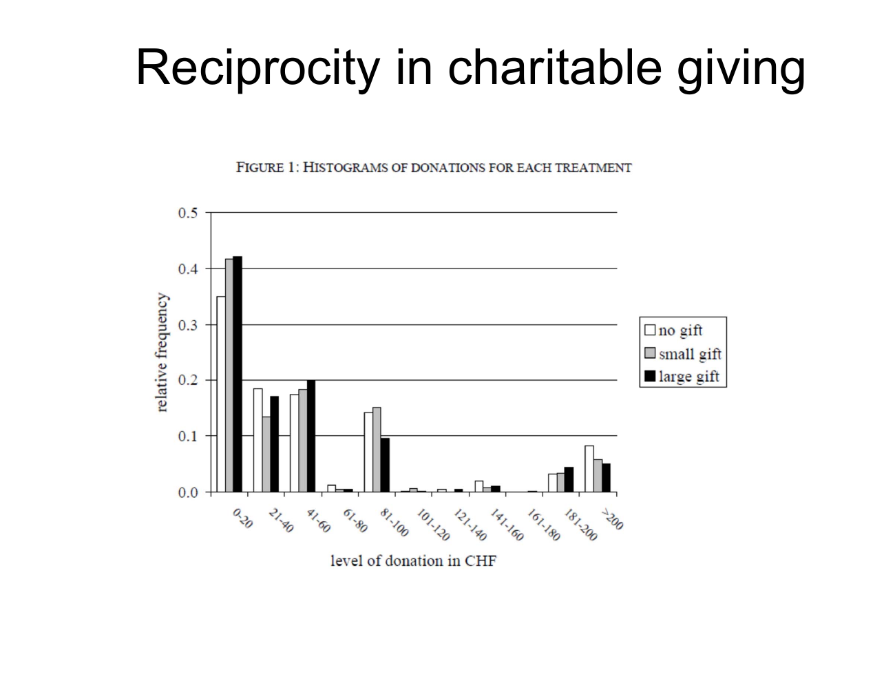

Interpret relative-pay comparisons without confusing own wages or percentages
Useful first: Derive effort incentives and effort-dependent social motives, Calculate piecewise utility and interpret payoff preferences
Lesson outline
- 02IntroductionSee the main question, learning objectives and prerequisites.
- 03Key definitions and conceptsGet familiar with the important terms and notation.
- 04Relative pay and charitable gift exchangeSocial preferences can make the treatment of co-workers or donors relevant even when own monetary pay is fixed.
- 05Relative wages with own wage held fixedBreza, Kaur and Shamdasani's Indian field experiment organizes workers into teams whose members make the same product in proximity, while production remains individual.
- 06Relative pay and charitable gift exchangeSocial preferences can make the treatment of co-workers or donors relevant even when own monetary pay is fixed.
- 07Worked exampleFollow a complete application of the reasoning.
- 08Practise the reasoningWork through written tasks, with optional support and solutions.
- 09Check your reasoning: an offline quizCheck your choices and see feedback without a connection.
- 10Check your understandingReview the key distinctions and check what you can explain.
- 11Test yourself laterTry another prepared question before rereading.
- 12SourcesFind the materials and limits behind the lesson.
Introduction
In this lesson, interpret relative-pay comparisons without confusing own wages or percentages.
2.1 What you’ll learn
- Explain the same-own-wage workplace comparison
- Calculate explicitly defined hypothetical relative changes and qualify justification/mechanism claims.
2.2 Before you begin
- Derive effort incentives and effort-dependent social motives
- Calculate piecewise utility and interpret payoff preferences
Check the foundations
If own and peer wages are both fixed with effort, what is the derivative of an absolute-gap penalty? Why does observing one allocation/payoff choice not uniquely identify all preference weights?
Reveal foundation explanation
The fixed gap has zero effort derivative (O009); an observed choice supplies limited inequalities/branch evidence and can have ties or overlapping motives (O003).
Key definitions and concepts
- Own-wage control: Holding the worker’s own wage fixed while comparing peers’ wages.
- Relative percentage change: A change divided by its stated baseline.
- Percentage-point change: The arithmetic difference between two probabilities expressed as percentages.
Relative pay and charitable gift exchange
Social preferences can make the treatment of co-workers or donors relevant even when own monetary pay is fixed. The lecture combines a workplace comparison experiment with a fundraising experiment. Their common logic is to vary a socially meaningful feature while keeping a useful monetary benchmark clear.

This map places the comparison group and outcome denominator before the substantive conclusion. It follows the two supplied applications and prevents treating attendance, donation frequency and donation amounts as interchangeable.
Relative wages with own wage held fixed
Breza, Kaur and Shamdasani's Indian field experiment organizes workers into teams whose members make the same product in proximity, while production remains individual. Teams are assigned either a flat common daily wage or different wages linked to baseline productivity rank.
Comparisons across treatments can hold a worker's own absolute wage fixed while changing what co-workers receive. Without this comparison, a low-paid worker's lower effort could simply reflect lower own pay rather than relative-pay concerns.
The lecture reports that workers paid less than peers reduce output by 12% and are 13% less likely to come to work, while higher relative pay produces no detected effort increase. These are the lecture's reported percentages, not an instruction to relabel the attendance change as 13 percentage points.
Nor does “no detected increase” prove an exactly zero effect for every worker. The Sli.do page asks for a prediction but shows no poll results.
Perceived justification matters: when the pay gap is clearly supported by observed baseline productivity differences, the negative effect is not detected. The simple fact of unequal pay therefore does not fully determine the response;
information about why pay differs changes the interpretation. The source concludes that inequality was bad for the firm in the studied comparison.
Treat that as an application-specific result, not a general theorem that every wage difference reduces output.
The lesson links to inequality aversion and fairness perceptions, but the design does not identify one utility function merely from a negative response. A preference for equality, resentment about unjustified treatment and beliefs about management can generate overlapping predictions.
The model note also explains why a utility penalty on an entirely effort-independent fixed wage gap cannot mechanically derive every effort effect without an additional channel. Adding a marginal social motive
Relative pay and charitable gift exchange
Read the full checked source context
Social preferences can make the treatment of co-workers or donors relevant even when own monetary pay is fixed. The lecture combines a workplace comparison experiment with a fundraising experiment. Their common logic is to vary a socially meaningful feature while keeping a useful monetary benchmark clear.
This map places the comparison group and outcome denominator before the substantive conclusion. It follows the two supplied applications and prevents treating attendance, donation frequency and donation amounts as interchangeable.
Relative wages with own wage held fixed
Breza, Kaur and Shamdasani's Indian field experiment organizes workers into teams whose members make the same product in proximity, while production remains individual. Teams are assigned either a flat common daily wage or different wages linked to baseline productivity rank.
Comparisons across treatments can hold a worker's own absolute wage fixed while changing what co-workers receive. Without this comparison, a low-paid worker's lower effort could simply reflect lower own pay rather than relative-pay concerns.
The lecture reports that workers paid less than peers reduce output by 12% and are 13% less likely to come to work, while higher relative pay produces no detected effort increase. These are the lecture's reported percentages, not an instruction to relabel the attendance change as 13 percentage points.
Nor does “no detected increase” prove an exactly zero effect for every worker. The Sli.do page asks for a prediction but shows no poll results.
Perceived justification matters: when the pay gap is clearly supported by observed baseline productivity differences, the negative effect is not detected. The simple fact of unequal pay therefore does not fully determine the response;
information about why pay differs changes the interpretation. The source concludes that inequality was bad for the firm in the studied comparison.
Treat that as an application-specific result, not a general theorem that every wage difference reduces output.
The lesson links to inequality aversion and fairness perceptions, but the design does not identify one utility function merely from a negative response. A preference for equality, resentment about unjustified treatment and beliefs about management can generate overlapping predictions.
The model note also explains why a utility penalty on an entirely effort-independent fixed wage gap cannot mechanically derive every effort effect without an additional channel. Adding a marginal social motive
Falk: a gift before the donation decision
Falk's 2007 field experiment sends roughly 10,000 letters for an education charity supporting schools in Bangladesh, addressed to potential donors in Switzerland. The randomized treatments contain no gift, one postcard, or four postcards. The postcards are illustrated with a child's drawing; the drawing is part of the gift treatment, not evidence about an individual donor's circumstances.
The theory comparison assumes that the solicitation and recipient's information are otherwise comparable. Pure selfishness without another benefit predicts no donation.
Simple altruism about the charity's work alone need not respond to gift size if relevant information and beliefs remain fixed. Reciprocity predicts a stronger response to a larger kind gesture.
These predictions depend on the maintained assumptions: gifts might also affect attention, beliefs, warm glow or perceived solicitation costs, so a response gradient is consistent with reciprocity rather than a unique proof of it.
| Treatment | Letters | Donations | Rounded donation frequency |
|---|---|---|---|
| No gift | 3,262 | 397 | 0.12 |
| Small gift | 3,237 | 465 | 0.14 |
| Large gift | 3,347 | 691 | 0.21 |
These source counts sum to 9,846 letters, explaining why “roughly 10,000” is an approximation. The frequency denominator is all letters in that treatment.
A movement from 0.12 to 0.21 is about 9 percentage points, whereas its relative increase using those rounded numbers is about 75%; the two descriptions have different units.
Exact ratios calculated from the raw counts need not equal ratios of the rounded displayed frequencies.

The next histogram shows the distribution of positive donation amounts, conditional on giving. It uses a different denominator from the frequency table. A treatment can change how many recipients donate, the amounts donors give, or both. The conditional histogram alone cannot establish the change in average revenue per mailed letter.

Timing and the revenue denominator
The source reports these CHF totals and Christmas means:
| Outcome | No gift | Small gift | Large gift |
|---|---|---|---|
| Christmas 2001 total | 24,673 | 27,106 | 40,877 |
| Christmas mean per letter | 7.56 | 8.37 | 12.21 |
| February 2002 total | 14,023 | 13,206 | 13,165 |
| Combined total | 38,696 | 40,312 | 54,042 |
For example, 24,673/3,262 is about CHF7.56, so the mean is per letter, including recipients who gave nothing, rather than per positive donor. The slide footnote retains donations of at most CHF500 (approximately €350).
The February totals are lower in the gift groups than in control, suggesting that timing or substitution must be considered; combined totals still remain higher for the large gift group.
Revenue is not net profit: postcard, postage and other treatment costs are not supplied here, so these totals do not establish net returns.

Bounded verification: the publisher abstract for Falk 2007, Econometrica 75(5), 1501–1511, confirms random assignment, approximately 10,000 letters, and the reported 17%/75% relative increases in giving frequency for small/large gifts. Full external paper access was not required for the lecture's reproduced tables and is not claimed here.
Relative pay and charitable gifts are core applications because they test social motivations outside anonymous laboratory games. The important skill is to reconstruct the comparison, prediction, outcome and limitation. The lecture's final summary reports social preferences as relevant in labour and donor contexts; it does not turn each empirical percentage into a universal behavioural constant.
Worked example
Prompt: A hypothetical unequal-pay workplace comparison holds a low-paid worker’s own daily wage fixed across equal-pay and peer-higher-pay teams, with the same individual production task. Baseline output is 100 units;
the unequal-pay condition reduces it by 12%. Baseline attendance probability is 0.8;
for this hypothetical calculation “13.0% less likely” explicitly means a relative reduction from that baseline. Calculate output, attendance probability and percentage-point change.
Explain the identifying comparison, how “the pay gap is visibly explained by prior productivity” would bear on the interpretation, and what the lecture’s actual 12%/13% reports do and do not establish. Does the design identify a unique inequality-aversion utility, or can a constant fixed wage-gap penalty by itself derive effort?
Solution: Output becomes \(100(1-.12)=88.00000000\) units. Under the expressly supplied relative-probability convention, attendance becomes \(0.8(1-0.13)=0.69600000\), a change of \(-10.40000000\) percentage points.
Relative percent and percentage points differ; the lecture’s actual 13% statement cannot be converted to 13 points or a numerical probability without a baseline and precise definition.
Keeping own wage fixed while changing peers’ wages separates relative-pay treatment from an own-wage-level explanation, subject to the randomized design and measured task. Clear baseline-productivity justification can change perceived fairness;
the lecture reports no detected negative effect under visible justification, not a theorem that any wage gap is harmless. Its 12% output/13% attendance reports are source-reported setting-specific effects and “no detected” high-pay increase is not proof of exact zero.
Equality concerns, resentment, fairness beliefs and management intentions can overlap. A literally fixed gap term is constant in effort and has zero derivative;
a further effort/payoff or social-meaning channel is needed. No unique utility function or universal employment effect is identified.
Practise the reasoning
Write your reasoning before revealing an explanation. Begin with support, then apply the ideas to another situation.
8.1 Written exercise 1
A hypothetical unequal-pay workplace comparison holds a low-paid worker’s own daily wage fixed across equal-pay and peer-higher-pay teams, with the same individual production task.
Solve the following:
- Baseline output is 80 units;
- the unequal-pay condition reduces it by 12%.
- Baseline attendance probability is 0.9;
- for this hypothetical calculation “13.0% less likely” explicitly means a relative reduction from that baseline.
- Calculate output, attendance probability and percentage-point change.
- Explain the identifying comparison, how “baseline-productivity differences justify the gap” would bear on the interpretation, and what the lecture’s actual 12%/13% reports do and do not establish.
- Does the design identify a unique inequality-aversion utility, or can a constant fixed wage-gap penalty by itself derive effort?
Show a hint
Pause before calculating or choosing an explanation:
- What quantities, actors or outcomes are being compared? Write their roles, units and dates beside them.
- Which condition decides whether the relationship applies? Check the relevant definition before using a formula or classifying the case.
- What would have to remain fixed for your comparison to be meaningful? Work through one link in the reasoning at a time.
- How could you check the direction, boundary case or alternative explanation before stating your conclusion?
A local draft for your own study.
Reveal explanation
Solution: Output becomes \(80(1-.12)=70.40000000\) units. Under the expressly supplied relative-probability convention, attendance becomes \(0.9(1-0.13)=0.78300000\), a change of \(-11.70000000\) percentage points.
Relative percent and percentage points differ; the lecture’s actual 13% statement cannot be converted to 13 points or a numerical probability without a baseline and precise definition.
Keeping own wage fixed while changing peers’ wages separates relative-pay treatment from an own-wage-level explanation, subject to the randomized design and measured task. Clear baseline-productivity justification can change perceived fairness;
the lecture reports no detected negative effect under visible justification, not a theorem that any wage gap is harmless. Its 12% output/13% attendance reports are source-reported setting-specific effects and “no detected” high-pay increase is not proof of exact zero.
Equality concerns, resentment, fairness beliefs and management intentions can overlap. A literally fixed gap term is constant in effort and has zero derivative;
a further effort/payoff or social-meaning channel is needed. No unique utility function or universal employment effect is identified.
8.2 Written exercise 2
A hypothetical unequal-pay workplace comparison holds a low-paid worker’s own daily wage fixed across equal-pay and peer-higher-pay teams, with the same individual production task.
Solve the following:
- Baseline output is 120 units;
- the unequal-pay condition reduces it by 12%.
- Baseline attendance probability is 0.75;
- for this hypothetical calculation “13.0% less likely” explicitly means a relative reduction from that baseline.
- Calculate output, attendance probability and percentage-point change.
- Explain the identifying comparison, how “workers observe a clear performance basis for unequal pay” would bear on the interpretation, and what the lecture’s actual 12%/13% reports do and do not establish.
- Does the design identify a unique inequality-aversion utility, or can a constant fixed wage-gap penalty by itself derive effort?
A local draft for your own study.
Reveal explanation
Solution: Output becomes \(120(1-.12)=105.60000000\) units. Under the expressly supplied relative-probability convention, attendance becomes \(0.75(1-0.13)=0.65250000\), a change of \(-9.75000000\) percentage points.
Relative percent and percentage points differ; the lecture’s actual 13% statement cannot be converted to 13 points or a numerical probability without a baseline and precise definition.
Keeping own wage fixed while changing peers’ wages separates relative-pay treatment from an own-wage-level explanation, subject to the randomized design and measured task. Clear baseline-productivity justification can change perceived fairness;
the lecture reports no detected negative effect under visible justification, not a theorem that any wage gap is harmless. Its 12% output/13% attendance reports are source-reported setting-specific effects and “no detected” high-pay increase is not proof of exact zero.
Equality concerns, resentment, fairness beliefs and management intentions can overlap. A literally fixed gap term is constant in effort and has zero derivative;
a further effort/payoff or social-meaning channel is needed. No unique utility function or universal employment effect is identified.
8.3 Written exercise 3
A hypothetical unequal-pay workplace comparison holds a low-paid worker’s own daily wage fixed across equal-pay and peer-higher-pay teams, with the same individual production task.
Solve the following:
- Baseline output is 150 units;
- the unequal-pay condition reduces it by 12%.
- Baseline attendance probability is 0.7;
- for this hypothetical calculation “13.0% less likely” explicitly means a relative reduction from that baseline.
- Calculate output, attendance probability and percentage-point change.
- Explain the identifying comparison, how “the employer supplies credible productivity information” would bear on the interpretation, and what the lecture’s actual 12%/13% reports do and do not establish.
- Does the design identify a unique inequality-aversion utility, or can a constant fixed wage-gap penalty by itself derive effort?
A local draft for your own study.
Reveal explanation
Solution: Output becomes \(150(1-.12)=132.00000000\) units. Under the expressly supplied relative-probability convention, attendance becomes \(0.7(1-0.13)=0.60900000\), a change of \(-9.10000000\) percentage points.
Relative percent and percentage points differ; the lecture’s actual 13% statement cannot be converted to 13 points or a numerical probability without a baseline and precise definition.
Keeping own wage fixed while changing peers’ wages separates relative-pay treatment from an own-wage-level explanation, subject to the randomized design and measured task. Clear baseline-productivity justification can change perceived fairness;
the lecture reports no detected negative effect under visible justification, not a theorem that any wage gap is harmless. Its 12% output/13% attendance reports are source-reported setting-specific effects and “no detected” high-pay increase is not proof of exact zero.
Equality concerns, resentment, fairness beliefs and management intentions can overlap. A literally fixed gap term is constant in effort and has zero derivative;
a further effort/payoff or social-meaning channel is needed. No unique utility function or universal employment effect is identified.
8.4 Another chance to practise
The lecture says13% less likely to attend.
Solve the following:
- Without a baseline and exact convention, may that be rewritten as a 13 percentage-point fall?
A local draft for your own study.
Reveal explanation
No. Relative percentages and probability-point differences use different denominators. A numerical probability or point change needs the stated baseline/convention; retain the source-reported wording otherwise.
Check your reasoning: an offline quiz
Choose one answer per question. Check individual answers or check the whole quiz. Each option includes feedback on the reasoning, and everything works offline.
Reveal explanation
\(100(1-0.12)=88\).
Reveal explanation
\(0.8(1-0.13)=0.696\), a10.4-percentage-point decrease.
Reveal explanation
The comparison addresses one competing explanation without resolving all mechanisms.
Check your understanding
- Explain the same-own-wage workplace comparison
- Calculate explicitly defined hypothetical relative changes and qualify justification/mechanism claims.
Test yourself later
Return to these questions after a break, before rereading the explanation. Use a question you have not just viewed.
11.1 Review question 1
A hypothetical unequal-pay workplace comparison holds a low-paid worker’s own daily wage fixed across equal-pay and peer-higher-pay teams, with the same individual production task.
Solve the following:
- Baseline output is 90 units;
- the unequal-pay condition reduces it by 12%.
- Baseline attendance probability is 0.85;
- for this hypothetical calculation “13.0% less likely” explicitly means a relative reduction from that baseline.
- Calculate output, attendance probability and percentage-point change.
- Explain the identifying comparison, how “the unequal-pay reason is transparently productivity-related” would bear on the interpretation, and what the lecture’s actual 12%/13% reports do and do not establish.
- Does the design identify a unique inequality-aversion utility, or can a constant fixed wage-gap penalty by itself derive effort?
A local draft for your own study.
Reveal explanation
Solution: Output becomes \(90(1-.12)=79.20000000\) units. Under the expressly supplied relative-probability convention, attendance becomes \(0.85(1-0.13)=0.73950000\), a change of \(-11.05000000\) percentage points.
Relative percent and percentage points differ; the lecture’s actual 13% statement cannot be converted to 13 points or a numerical probability without a baseline and precise definition.
Keeping own wage fixed while changing peers’ wages separates relative-pay treatment from an own-wage-level explanation, subject to the randomized design and measured task. Clear baseline-productivity justification can change perceived fairness;
the lecture reports no detected negative effect under visible justification, not a theorem that any wage gap is harmless. Its 12% output/13% attendance reports are source-reported setting-specific effects and “no detected” high-pay increase is not proof of exact zero.
Equality concerns, resentment, fairness beliefs and management intentions can overlap. A literally fixed gap term is constant in effort and has zero derivative;
a further effort/payoff or social-meaning channel is needed. No unique utility function or universal employment effect is identified.
11.2 Review question 2
A hypothetical unequal-pay workplace comparison holds a low-paid worker’s own daily wage fixed across equal-pay and peer-higher-pay teams, with the same individual production task.
Solve the following:
- Baseline output is 200 units;
- the unequal-pay condition reduces it by 12%.
- Baseline attendance probability is 0.6;
- for this hypothetical calculation “13.0% less likely” explicitly means a relative reduction from that baseline.
- Calculate output, attendance probability and percentage-point change.
- Explain the identifying comparison, how “the gap’s productivity justification is understood” would bear on the interpretation, and what the lecture’s actual 12%/13% reports do and do not establish.
- Does the design identify a unique inequality-aversion utility, or can a constant fixed wage-gap penalty by itself derive effort?
A local draft for your own study.
Reveal explanation
Solution: Output becomes \(200(1-.12)=176.00000000\) units. Under the expressly supplied relative-probability convention, attendance becomes \(0.6(1-0.13)=0.52200000\), a change of \(-7.80000000\) percentage points.
Relative percent and percentage points differ; the lecture’s actual 13% statement cannot be converted to 13 points or a numerical probability without a baseline and precise definition.
Keeping own wage fixed while changing peers’ wages separates relative-pay treatment from an own-wage-level explanation, subject to the randomized design and measured task. Clear baseline-productivity justification can change perceived fairness;
the lecture reports no detected negative effect under visible justification, not a theorem that any wage gap is harmless. Its 12% output/13% attendance reports are source-reported setting-specific effects and “no detected” high-pay increase is not proof of exact zero.
Equality concerns, resentment, fairness beliefs and management intentions can overlap. A literally fixed gap term is constant in effort and has zero derivative;
a further effort/payoff or social-meaning channel is needed. No unique utility function or universal employment effect is identified.
Sources
Show materials and lesson scope
- L3 BE_SP_field IES 2026.pdf, physical PDF pp. 25–35
- L3 BE_SP_field IES 2026.pdf, physical PDF pp. 26–34
- L3 BE_SP_field IES 2026.pdf, physical PDF pp. 26
- L3 BE_SP_field IES 2026.pdf, physical PDF pp. 27–28
- L3 BE_SP_field IES 2026.pdf, physical PDF pp. 28
- L3 BE_SP_field IES 2026.pdf, physical PDF pp. 7, 26–28
- L3 BE_SP_field IES 2026.pdf, physical PDF pp. 29–31
- L3 BE_SP_field IES 2026.pdf, physical PDF pp. 30
- L3 BE_SP_field IES 2026.pdf, physical PDF pp. 32
- L3 BE_SP_field IES 2026.pdf, physical PDF pp. 33
- L3 BE_SP_field IES 2026.pdf, physical PDF pp. 34
- L3 BE_SP_field IES 2026.pdf, physical PDF pp. 35
Numerical and contextual illustrations are hypothetical unless explicitly described as a reported result. Historical data, model assumptions and unresolved source differences retain their stated limits.
These exercises are for self-study. Viewing a prepared item or solution may make that item unsuitable as a fresh check in a tutor chat. This page does not record an assessed learning result.